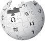
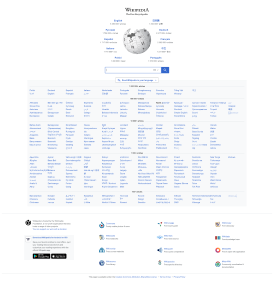

| Википедия | |
|---|---|
|  | |
|  | |
| URL | wikipedia.org |
| Коммерческий | нет |
| Тип сайта | интернет-энциклопедия |
| Регистрация | необязательная |
| Язык программирования | PHP (платформа LAMP) |
| Владелец | Фонд Викимедиа |
| Создатель | Джимми Уэйлс и Ларри Сэнгер |
| Начало работы | 15 января 2001 |
| Текущий статус | функционирует и развивается |
| Слоган | «Свободная энциклопедия, которую может редактировать каждый» |
Википе́дия — многоязычная общедоступная интернет-энциклопедия со свободным контентом, поддержку и написание которой осуществляют добровольцы — «википедисты», посредством открытого сотрудничества и с использованием программного обеспечения (сайта) MediaWiki, а также системы редактирования на основе вики-принципов. Википедия является самым крупным и наиболее читаемым справочником, а также самой полной энциклопедией из когда-либо создававшихся за всю историю человечества. По состоянию на февраль 2024 года сайт находится на 7 месте по посещаемости в мире по версии компании SimilarWeb, занимающейся анализом интернет-трафика.
Запущена 15 января 2001 года Джимми Уэйлсом и Ларри Сэнгером. Владелец сайта — американская некоммерческая организация «Фонд Викимедиа».
Название энциклопедии образовано от английских слов wiki («вики»; в свою очередь заимствовано из гавайского языка, в котором оно имеет значение «быстро») и encyclopedia («энциклопедия»). Одним из основных достоинств Википедии как универсальной энциклопедии является возможность представления информации на родном языке пользователя. В Википедии есть 345 разделов на различных языках мира, а также сотни языковых разделов, находящихся в инкубаторе. Она содержит более 60 миллионов статей.
Главной особенностью Википедии является то, что создавать и редактировать статьи в ней может любой пользователь Интернета, поскольку она построена на принципе «вики» — технологии веб-сайта, предоставляющей пользователям инструменты для редактирования текста в нём. Все вносимые такими добровольцами изменения незамедлительно становятся доступными для просмотра всем посетителям сайта. В декабре 2013 года в заявлении ЮНЕСКО по случаю награждения Джимми Уэйлса, основателя Википедии, Золотой медалью Нильса Бора про Википедию было сказано, что она является «символом эпохи взаимодействия, в которую мы живём, и это не просто инструмент, это воплощение мечты, столь же древней, как само человечество, как собрания Александрийской библиотеки».
Поскольку Википедию, будучи не ознакомленным с темой статьи в ней, исходя из концепции «Вики», может редактировать любой интернет-пользователь, её надёжность и точность неоднозначны. Википедию критикуют за возможность добавления ложной, непроверенной или неактуальной информации и вандализма на её страницах, однако научные исследования свидетельствуют о том, что вандализм обычно оперативно устраняют.
Раздел Википедии на русском языке, по состоянию на 12 сентября 2024 года, насчитывает 1 999 230 статей различной тематики, занимая 7-е место по количеству статей среди всех языковых разделов.
{kind=link}
.svg?uselang=ru){kind=link}